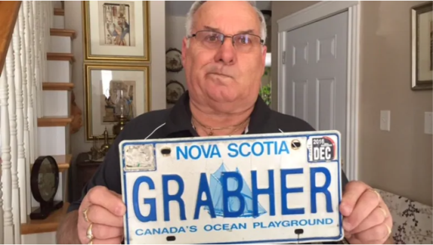

Absurdist Legal Tyranny - Grabher Edition
February 20th, 2021
CBC:
TDC_ARTICLE_START
Lorne Grabher has lost his bid in Nova Scotia Supreme Court to reclaim his GRABHER vanity licence plate.
"I'm not giving up. I'm in it for the long haul," Grabher said in a phone interview Friday.
He said he'd pursue appeals up to the Supreme Court of Canada if that's what it takes.
Grabher applied for the plate for his father approximately 27 years ago as a celebration of his family name.
When his father moved to Alberta, the plate was transferred to him.
TDC_ARTICLE_STOP
Lorne Grabher and his "violent" license plate
Goy Grabher gets a license plate in his name 27 years ago. Cunt judge rules that filthy peasant is not allowed to have license in his own name.
TDC_ARTICLE_START
But late in 2016, the Nova Scotia Registry of Motor Vehicles revoked Grabher's licence plate due to a public complaint.
Officials agreed the plate could be interpreted as encouragement to grab a woman without her consent.
Grabher appealed to the Supreme Court of Nova Scotia saying banning his name from a licence plate violated his charter rights to equality and freedom of expression.
"And it's just the principle. I put my name on everything else and there's no problem," he said.
"It's not the licence plate. It's the name. They're using it as a word. It's not a word, it's my name," he said.
In a written decision on Friday, Justice Darlene Jamieson upheld the province's right to revoke the plate.
In her decision, Jamieson wrote that without context, the licence plate GRABHER can be interpreted as promoting sexualized violence.
"Preventing harm that could flow from such a message on a government plate must be seen as pressing and substantial," she said.
She said Grabher is not facing discrimination due to his Austrian-German heritage.
"The registrar's actions indicate that anyone with the personalized plate 'GRABHER', regardless of their national or ethnic origin, would be denied such a plate," Jamieson said.
"The plate was recalled because the seven letters "GRABHER" could be interpreted as a socially unacceptable statement (grab her), without the benefit of further context indicating this was Mr. Grabher's surname," she said.
TDC_ARTICLE_STOP
"Justice" Darlene Jamieson
I'm not going to print the rest of this piece. I think you get it. I just want you to take a look at what happened here, and then look at this creatures face. Look at it. Look at it's fucking face. Look at the face of the robed dictator that demands this White Man get a new license plate after 27 years because there's a serious argument to be made, that maybe, just mayber, someone is going to, I don't know, look at his license plate and then go rape a bitch? It's so fucking absurd that it's funny.
SCENE
Some handsome construction worker walks out of a Tim Hortons after a long day. He walks out the parking lot. He sees a pretty girl. They lock eyes. He gets a little bit nervous/excited and they both smile. It's such an innocent beautiful scene. Perhaps the start of something truly wonderful.
As he goes to put his keys in his car, something causes him to pause. He can't describe it, but his subconscious forces him to look at the last license plate they passed.
"GRABHER"
"GRABHER"
A second passes as he glances at the license plate, hypnotized by the seductive properties of the vanity plate. He turns back to the pretty girl.
"GRAB HER"
TDC_ARTICLE_START
"You know I'm getting an INTERESTING idea."
TDC_ARTICLE_STOP
A rapey smile crosses his face. He pull down his pants and goes chasing after the poor girl. She shrieks with fear before generic, vague harm comes her way.
/SCENE
Oh if only he hadn't seen that license plate, harm could have been avoided. Thank fucking god we have she-bitch Darlene on the case. To think of the mass numbers of wahmens who could have gotten sexually assaulted, or something, because of a vanity license plate with GRABHER on it. Thank god we don't live in that timeline.